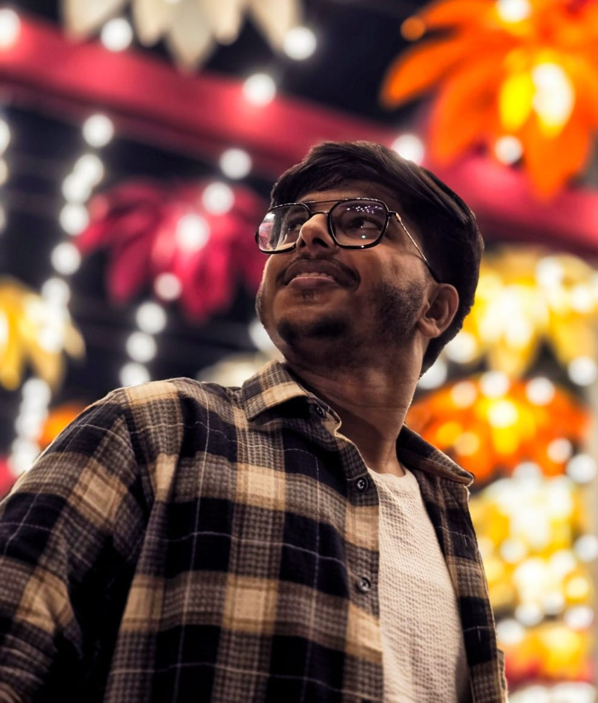

Hi
Where Tradition Meets Imagination
Welcome to the artistic world of Kaushik Paul, a painter and visual artist who brings imagination to life through both traditional and digital art.
Blending the timeless beauty of traditional techniques with the limitless possibilities of digital creativity, Kaushik explores ideas, emotions, and perspectives through his unique artistic vision. Each artwork is an expression of creativity, shaped by a passion for colors, forms, and the stories they can tell.
From the texture of a brushstroke on canvas to the precision of a digital illustration, his work celebrates the endless ways art can inspire, connect, and evoke emotion.
This is more than a gallery—it's a glimpse into an evolving creative journey, where every piece reflects a vision and every creation opens a new world of possibilities.
Discover the art. Feel the vision. Explore the imagination.

Highlights

A dream come true moment! ✨ Got the incredible opportunity to meet **Talwinder** at Kolkata. 🖤🎶 Grateful to @talwiinder, @purangabbi, @knavmusic, and @amaz zingh for making this unforgettable experience possible. 🙏❤️ This moment will always remain a special memory in my journey as a fan. 🥹💫 Hard work, passion, and dreams really do pay off! 🌟 **Forever grateful, forever a Talwinder fan!** 🖤🔥

✨❤️ Met the OG **Kunwarrr** and got the chance to share my acrylic portrait with him! 🎨🥹 A moment filled with happiness, gratitude, and memories that will stay with me forever. 🫶💫 Turning my passion for art into unforgettable real-life experiences. 🖌️🔥 Every dream feels worth it when hard work meets the right moment. ❤️🔥 **Forever a fan, forever an artist chasing dreams!** 🌸✨

Grateful beyond words for this unforgettable moment! ✨❤️ Truly thankful to **Dhvani Bhanushali** for appreciating my artwork and making my New Year extra special. 🥹🎨 As an artist, moments like these inspire me to keep creating, dreaming, and believing in myself. 🫶💫 A little dream, a lot of hard work, and memories to cherish forever. 🤍✨ To everyone out there, never stop dreaming because you never know when your moment will come! 🌟 **Keep creating, keep believing, and let your art speak!** 🎨❤️🔥

✨❤️Got the incredible opportunity to share my artwork with **Dino James**! 🎤🔥 A moment I'll cherish forever. 🥹🎨 As an artist, meeting someone whose music inspires so many people feels truly special. Grateful for this unforgettable experience and thankful for the opportunity! 🙏💫 🎨❤️ From sketching dreams on paper to sharing my art with the people who inspire me — every step makes the journey worthwhile. **Keep dreaming, keep creating, and never stop believing in your art!** 🖤✨